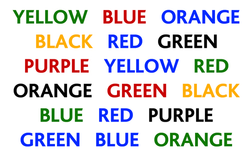

Confusers in Ophthalmology
·
Phacolytic
glaucoma (lens protein glaucoma) is open-angle glaucoma occurring in association with
a hypermature cataract.
phacoanaphylactic
(phacoantigenic) uveitis which is an autoimmune granulomatous reaction due
to altered tolerance to lens proteins occurring in an eye with a ruptured
capsule.
Phacomorphic glaucoma is an
acute secondary angle-closure glaucoma precipitated by an intumescent cataractous lens.
·
Light energy
Radiance:
Emission of light due to heat
Luminescence
: Emission of light from any other source than heat
Two types:
Fluorescence: Luminescence that is
maintained only by continuous excitation.
Phosphorescence: Luminescence where
the emission continues long after the excitation has stopped.
·
Preinjection
hyperfluorescence can be either due to autofluorescence or pseudofluorescence.
Autofluorescence is an innate property of
certain structures to emit fluorescent light even in the absence of sodium
fluorescein. Optic nerve
head drusen and astrocytic hamartoma are examples of
autofluorescence
Pseudofluorescence occurs due to mismatched
barrier and exciter filters.
·
The term ‘mixed mechanism’
may be used to describe ACG in which both significant pupillary
block and non-pupillary block iris-induced mechanism coexist.
‘Combined mechanism’ describes the combination
of angle-closure and open-angle
elements, although it is generally not possible to determine whether sustained
elevation of IOP following successful anatomical opening of an angle is due to
TM changes secondary to prior iris apposition.
·
Dialyses are circumferential tears along
the ora serrata with vitreous gel attached to their posterior margins.
Giant tears involve 90° or more of the
circumference of the globe. They are most frequently located in the immediate
post-oral retina or, less commonly, at the equator. Giant tears are a variant
of U-shaped tears with the vitreous gel attached to the anterior margin of the break.
·
In atropinic mydriasis
the entire sphincter is palsied(360%) and pilocarpine miosis is blocked,
while in adrenergic
mydriasis the pupil is unusually
large,the palpabral fissure is widened and conjunctiva is blanched.
Accommodation is not impaired and very bright light can overcome the mydriasis.
·
epithelial
downgrowth: epithelialization that extends into the anterior chamber
epithelial ingrowth: epithelialization under the LASIK flap.
·
Heterochromia Iridis: Unilateral; single iris with two colors
(iris bicolor).
Heterochromia Iridum: Bilateral; irises are different colors
(e.g., one blue, one brown).
·
Dystopia: inferior diaplacement of the GLOBE.
Hypotropia: downward devation of VISUAL AXIS, globe
is not displaced per se.
·
Lagophthalmos: total or partial inability to close the
eye on forceful closure
Lid Lag: static situation when upper eyelid is
higher than the normal with the globe in downgaze
Von graefe’s sign: dynamic sign describing the retarded decent
of eyelid during movement of globe from primary position to downgaze.
·
Xanthoma:
tumor containing intracellular fat
Lipogranuloma: tumor containing extracellular fat
Xanthelesma: it’s a type of xanthoma
- compiled & published by Dr Dhaval Patel MD AIIMS